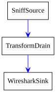
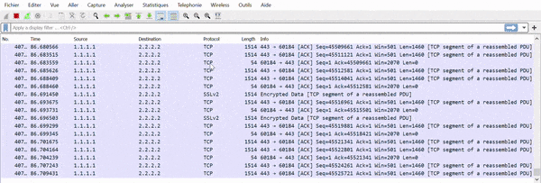
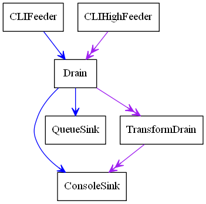

PipeTools
Scapy’s pipetool is a smart piping system allowing to perform complex stream data management.
The goal is to create a sequence of steps with one or several inputs and one or several outputs, with a bunch of blocks in between. PipeTools can handle varied sources of data (and outputs) such as user input, pcap input, sniffing, wireshark… A pipe system is implemented by manually linking all its parts. It is possible to dynamically add an element while running or set multiple drains for the same source.
Note
Pipetool default objects are located inside scapy.pipetool
Demo: sniff, anonymize, send to Wireshark
The following code will sniff packets on the default interface, anonymize the source and destination IP addresses and pipe it all into Wireshark. Useful when posting online examples, for instance.
source = SniffSource(iface=conf.iface)
wire = WiresharkSink()
def transf(pkt):
if not pkt or IP not in pkt:
return pkt
pkt[IP].src = "1.1.1.1"
pkt[IP].dst = "2.2.2.2"
return pkt
source > TransformDrain(transf) > wire
p = PipeEngine(source)
p.start()
p.wait_and_stop()
The engine is pretty straightforward:

Let’s run it:

Class Types
There are 3 different class of objects used for data management:
SourcesDrainsSinks
They are executed and handled by a PipeEngine object.
When running, a pipetool engine waits for any available data from the Source, and send it in the Drains linked to it. The data then goes from Drains to Drains until it arrives in a Sink, the final state of this data.
Let’s see with a basic demo how to build a pipetool system.

For instance, this engine was generated with this code:
>>> s = CLIFeeder()
>>> s2 = CLIHighFeeder()
>>> d1 = Drain()
>>> d2 = TransformDrain(lambda x: x[::-1])
>>> si1 = ConsoleSink()
>>> si2 = QueueSink()
>>>
>>> s > d1
>>> d1 > si1
>>> d1 > si2
>>>
>>> s2 >> d1
>>> d1 >> d2
>>> d2 >> si1
>>>
>>> p = PipeEngine()
>>> p.add(s)
>>> p.add(s2)
>>> p.graph(target="> the_above_image.png")
start() is used to start the PipeEngine:
>>> p.start()
Now, let’s play with it by sending some input data
>>> s.send("foo")
>'foo'
>>> s2.send("bar")
>>'rab'
>>> s.send("i like potato")
>'i like potato'
>>> print(si2.recv(), ":", si2.recv())
foo : i like potato
Let’s study what happens here:
there are two canals in a
PipeEngine, a lower one and a higher one. Some Sources write on the lower one, some on the higher one and some on both.most sources can be linked to any drain, on both lower and higher canals. The use of
>indicates a link on the low canal, and>>on the higher one.when we send some data in
s, which is on the lower canal, as shown above, it goes through theDrainthen is sent to theQueueSinkand to theConsoleSinkwhen we send some data in
s2, it goes through the Drain, then the TransformDrain where the data is reversed (see the lambda), before being sent toConsoleSinkonly. This explains why we only have the data of the lower sources inside the QueueSink: the higher one has not been linked.
Most of the sinks receive from both lower and upper canals. This is verifiable using the help(ConsoleSink)
>>> help(ConsoleSink)
Help on class ConsoleSink in module scapy.pipetool:
class ConsoleSink(Sink)
| Print messages on low and high entries
| +-------+
| >>-|--. |->>
| | print |
| >-|--' |->
| +-------+
|
[...]
Sources
A Source is a class that generates some data.
There are several source types integrated with Scapy, usable as-is, but you may also create yours.
Default Source classes
For any of those class, have a look at help([theclass]) to get more information or the required parameters.
CLIFeeder: a source especially used in interactive software. itssend(data)generates the event data on the lower canalCLIHighFeeder: same than CLIFeeder, but writes on the higher canalPeriodicSource: Generate messages periodically on the low canal.AutoSource: the default source, that must be extended to create custom sources.
Create a custom Source
To create a custom source, one must extend the AutoSource class.
Note
Do NOT use the default Source class except if you are really sure of what you are doing: it is only used internally, and is missing some implementation. The AutoSource is made to be used.
To send data through it, the object must call its self._gen_data(msg) or self._gen_high_data(msg) functions, which send the data into the PipeEngine.
The Source should also (if possible), set self.is_exhausted to True when empty, to allow the clean stop of the PipeEngine. If the source is infinite, it will need a force-stop (see PipeEngine below)
For instance, here is how CLIHighFeeder is implemented:
class CLIFeeder(CLIFeeder):
def send(self, msg):
self._gen_high_data(msg)
def close(self):
self.is_exhausted = True
Drains
Default Drain classes
Drains need to be linked on the entry that you are using. It can be either on the lower one (using >) or the upper one (using >>).
See the basic example above.
Drain: the most basic Drain possible. Will pass on both low and high entry if linked properly.TransformDrain: Apply a function to messages on low and high entryUpDrain: Repeat messages from low entry to high exitDownDrain: Repeat messages from high entry to low exit
Create a custom Drain
To create a custom drain, one must extend the Drain class.
A Drain object will receive data from the lower canal in its push method, and from the higher canal from its high_push method.
To send the data back into the next linked Drain / Sink, it must call the self._send(msg) or self._high_send(msg) methods.
For instance, here is how TransformDrain is implemented:
class TransformDrain(Drain):
def __init__(self, f, name=None):
Drain.__init__(self, name=name)
self.f = f
def push(self, msg):
self._send(self.f(msg))
def high_push(self, msg):
self._high_send(self.f(msg))
Sinks
Sinks are destinations for messages.
A Sink receives data like a Drain, but doesn’t send any
messages after it.
Messages on the low entry come from push(), and messages on the
high entry come from high_push().
Default Sinks classes
ConsoleSink: Print messages on low and high entries tostdoutRawConsoleSink: Print messages on low and high entries, using os.writeTermSink: Prints messages on the low and high entries, on a separate terminalQueueSink: Collects messages on the low and high entries into aQueue
Create a custom Sink
To create a custom sink, one must extend Sink and implement
push() and/or high_push().
This is a simplified version of ConsoleSink:
class ConsoleSink(Sink):
def push(self, msg):
print(">%r" % msg)
def high_push(self, msg):
print(">>%r" % msg)
Link objects
As shown in the example, most sources can be linked to any drain, on both low and high entry.
The use of > indicates a link on the low entry, and >> on the high
entry.
For example, to link a, b and c on the low entries:
>>> a = CLIFeeder()
>>> b = Drain()
>>> c = ConsoleSink()
>>> a > b > c
>>> p = PipeEngine()
>>> p.add(a)
This wouldn’t link the high entries, so something like this would do nothing:
>>> a2 = CLIHighFeeder()
>>> a2 >> b
>>> a2.send("hello")
Because b (Drain) and c (scapy.pipetool.ConsoleSink) are not
linked on the high entry.
However, using a DownDrain would bring the high messages from
CLIHighFeeder to the lower channel:
>>> a2 = CLIHighFeeder()
>>> b2 = DownDrain()
>>> a2 >> b2
>>> b2 > b
>>> a2.send("hello")
The PipeEngine class
The PipeEngine class is the core class of the Pipetool system. It must be initialized and passed the list of all Sources.
There are two ways of passing sources:
during initialization:
p = PipeEngine(source1, source2, ...)using the
add(source)method
A PipeEngine class must be started with .start() function. It may be force-stopped with the .stop(), or cleanly stopped with .wait_and_stop()
A clean stop only works if the Sources is exhausted (has no data to send left).
It can be printed into a graph using .graph() methods. see help(do_graph) for the list of available keyword arguments.
Scapy advanced PipeTool objects
Note
Unlike the previous objects, those are not located in scapy.pipetool but in scapy.scapypipes
Now that you know the default PipeTool objects, here are some more advanced ones, based on packet functionalities.
SniffSource: Read packets from an interface and send them to low exit.RdpcapSource: Read packets from a PCAP file send them to low exit.InjectSink: Packets received on low input are injected (sent) to an interfaceWrpcapSink: Packets received on low input are written to PCAP fileUDPDrain: UDP payloads received on high entry are sent over UDP (complicated, have a look athelp(UDPDrain))FDSourceSink: Use a file descriptor as source and sinkTCPConnectPipe: TCP connect to addr:port and use it as source and sinkTCPListenPipe: TCP listen on [addr:]port and use the first connection as source and sink (complicated, have a look athelp(TCPListenPipe))
Triggering
Some special sort of Drains exists: the Trigger Drains.
Trigger Drains are special drains, that on receiving data not only pass it by but also send a “Trigger” input, that is received and handled by the next triggered drain (if it exists).
For example, here is a basic TriggerDrain usage:
>>> a = CLIFeeder()
>>> d = TriggerDrain(lambda msg: True) # Pass messages and trigger when a condition is met
>>> d2 = TriggeredValve()
>>> s = ConsoleSink()
>>> a > d > d2 > s
>>> d ^ d2 # Link the triggers
>>> p = PipeEngine(s)
>>> p.start()
INFO: Pipe engine thread started.
>>>
>>> a.send("this will be printed")
>'this will be printed'
>>> a.send("this won't, because the valve was switched")
>>> a.send("this will, because the valve was switched again")
>'this will, because the valve was switched again'
>>> p.stop()
Several triggering Drains exist, they are pretty explicit. It is highly recommended to check the doc using help([the class])
TriggeredMessage: Send a preloaded message when triggered and trigger in chainTriggerDrain: Pass messages and trigger when a condition is metTriggeredValve: Let messages alternatively pass or not, changing on triggerTriggeredQueueingValve: Let messages alternatively pass or queued, changing on triggerTriggeredSwitch: Let messages alternatively high or low, changing on trigger